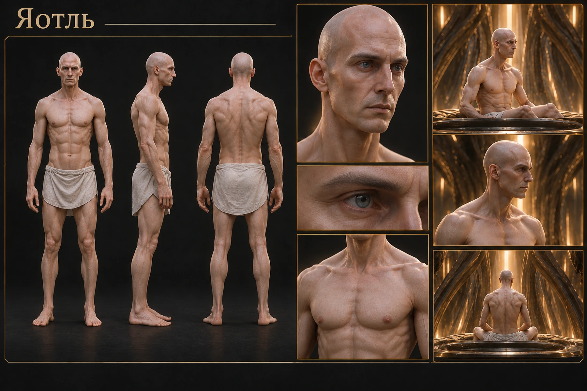

OVERVIEW
Yaotl
Yaotl. This page preserves the approved character design without adding unconfirmed details.

CANON AND STORY ROLE
Confirmed information
A fixed feature of the approved design is a single white loincloth. No additional clothing, role, origin or surrounding characters are invented.